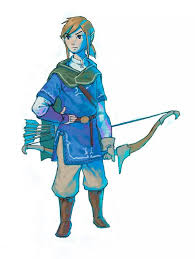

Updated weekly
1000s of years ago an unown race enslaved the world of Hombaroth forcing them to build potal so htat they may cross through in their true forms. luckily a band of heroes rose up from the ashes of society and freed the world. The portal was lost to all but a few. recently tremors have been coming from where the portal was believe to be and our party of heroes signed up for what seemed like a bisc expedition. it was only when their boat was attacked by pirates and the captain killed that they learnt it wasn't a normal boat ride. They woke up in the study without their weapons and took on to pirates with only their wits and magic. They fought their way out of the ship losing the boats master who had been held as hostage. after clearing out all the pirates on deck they found the keys to the captains quarters and opened the door. stood infront of them was the captain who had previously been decapitated, instead of her head there was a wispy purple form with yellow wisps for eyes. He mocked the crew and used his mind controlling magic to turn one of the party members on the rest. they eventually killed the physical body and the wisp began to fade yelling about this not being the last time they met. On the captains desk laid a scroll with their names onwhen opened the scroll turned into a map with glowing red marks at different points and a marker for the boat. One of the two red makrs was on a big city so the party decided to head their to stock up on supplies and see why there was an X. When they posted they were greeted by a big sign saying it was home to biggest the biggest abby in the continent. after a failed attempt to burn boats at the local boat muesum they decided to find a inn for the night and settled on the cheapest option. On their way to the inn they got stopped and were told to visit the abby to find out the true intentions of the town. in the morning they went into the abbey and were stripepd of weapons while the service was going on, in front was a black cloth and the voice form behind it sounded similar to the voice of the wisp on the ship. IT spoke of purging the city of visitors after the service the party went back to the alleyway and found out who the voice was, the voice was that of the inn keeper and down the alleyway was a courtyard with people sitting driking and singing about revolution. the party joined the smallest gorups and went to fight. there was double the ammount of mindcontrolled people to the revolutionists. Over that time they have lost and gained people to their party but they all share oen common goal. Below is link from breath of the wild, this is the closest image i could find to one of our players characters.
